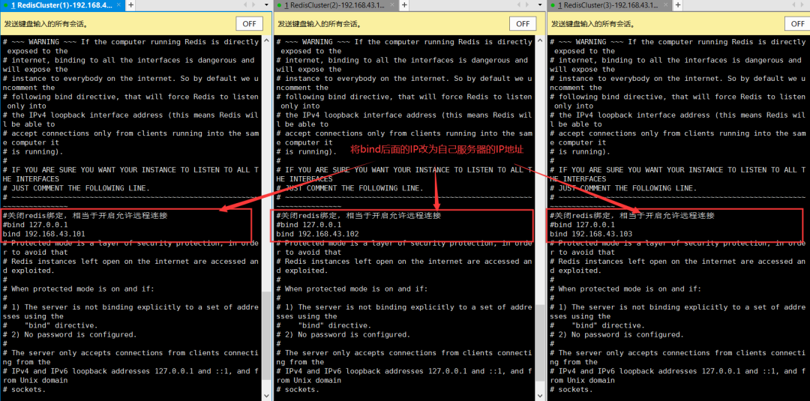
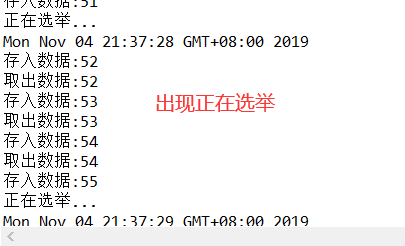

原文连接:https://www.cnblogs.com/javazhiyin/p/11818438.html
前言
一直都想自己动手搭建一个Redis集群和MySQL的主从同步，当然不是依靠Docker的一键部署（虽然现在企业开发用的最多的是这种方式），所以本文就算是一个教程类文章吧，但在动手搭建之前，会先聊聊理论的东西，以便于大家有一个集群和主从同步的概念，如果有同学不了解Redis和MySQL，可以看一下我之前的两篇文章。
什么是Redis集群
简介
Redis是一个快速高效的NoSQL型数据库，由于其基于内存存储、单线程、多路IO复用的特性，其QPS可以达到惊人的100000+（官方数据），但是即使有这么高的速度，在中国这么大的网民基数环境下，也存在着性能瓶颈。
首先抛开服务器故障不谈，Redis集群首先可以使Redis性能得到线性提高，这是毋庸置疑的，其次Redis集群除了解决了效率问题，还可以解决服务器宕机造成的数据丢失问题，当某个Redis节点宕机，剩下的节点会继续工作，并不会影响整体集群的使用，从而实现高可用。
Redis单机模式有什么问题
单机故障
在单机模式下的Redis，我们的应用中所有需要缓存的数据都依赖一台Redis服务器，应用的流量小可能看不出什么问题，但是随着应用越来越大，流量越来越大，如果出现服务器宕机或者断电的状况，那么我们的应用整个一个缓存层在一段时间内（重启）都将不复存在。
先不谈基于Redis的分布式Session可能造成的问题，如果恰好遇上流量高峰，这些流量直接打在数据库上，我们知道数据库的IO效率远不及Redis，这将大大提高应用负载，容易出现数据库服务器的宕机，从而造成应用的宕机。
由此看来，单机版Redis如果出现故障，将有可能引起一系列的连锁反应，造成不可逆的损失。
容量瓶颈
我们知道Redis是基于内存存储的一个NoSQL数据库，基于内存也是其高速高效的原因之一。虽然容量瓶颈在实际生产中并不常见（通常有意识地将搭载Redis的机器内存容量加高），但是不排除在某些极端条件下Redis会将一台机器的内存耗尽，造成数据丢失，甚至服务器宕机。
性能瓶颈
简介中提到，虽然Redis在官方文档中提到可以达到约100000+QPS，但是首先在日常环境的测试中，我们可能并达不到文档中宣称的QPS，换言之，这可能也就是一种理论值，就像是4G的理论网速在10-100Mbps，折合下载速度1.5M/s-10M/s。
但在日常生活中我们极少甚至从来没有达到过这个速度过，一样的道理。其次，在中国巨大的网民基数下，单机Redis满足日常需求尚且捉襟见肘，如果碰上像双十一、双十二、春运这些特殊的环境，单台Redis显然会有性能不足的现象发生。
Redis集群的三种模式
主从模式
主从模式是最简单的一种Redis集群模式，首先其思想就是一台Redis服务器作为主服务器（Master），一台或多台服务器作为从服务器（Slave）。当以此种方式部署集群时，集群有如下特点：
- Master可以进行读写操作，当写操作导致数据发生变化时，将自动同步给Slave，Slave通常是只读的，并且接受从Master同步过来的数据。
- 一台Master可以有多台Slave，但每台Slave只能有一个Master。
- 某台Slave宕机不影响其他Slave和Master的读写，重新启动后会将数据重新从Master同步过来。
- Master宕机后不影响Slave的读，但该集群不再提供对Redis的写入功能。
- Master宕机后不会从Slave中选举主节点。
在此种模式下，我们可以对Redis集群做容灾备份和读写分离，但是要注意，容灾备份并不能拯救你的误操作，因为无论增删改，Redis都将其作为写，同步到每个Slave节点上，所以容灾，是指不可预知的错误导致数据丢失，这种情况下可以从Slave节点中找到原数据的备份，从而进行数据恢复。
而读写分离就比较好理解了，上文中提到，Master节点可以读写，而Slave节点通常只进行读操作，索性直接将所有的读操作都转移到Slave节点上，这样可以减轻Master节点的IO压力。
主从模式的工作原理（全量同步）:
Redis全量同步一般发生在Slave初始化阶段，但其实在任何时候Slave都可以向Master发起全量同步的请求，这时Slave需要将Master上的所有数据都复制一份。
- Slave连接主服务器，发送SYNC命令。
- Master接收到SYNC命令后，开始执行BGSAVE命令生成RDB文件并使用缓冲区记录此后执行的所有写命令。
- Master执行完BGSAVE后，向所有从服务器发送RDB文件，并在发送期间继续记录被执行的写命令。
- Slave收到RDB文件后丢弃所有旧数据，载入收到的RDB。
- Master快照发送完毕后开始向Slave发送缓冲区中的写命令。
- Slave完成对RDB的载入，开始接收命令请求，并执行来自Master缓冲区的写命令。
主从模式的工作原理（增量同步）:
Redis增量同步一般发生在Slave已经初始化完成，开始正常连接Master的阶段
- Master接收到写请求，将写命令发送到Slave。
- Slave执行接收到的些命令。
注：如果多个Slave同时宕机重启，那么就会同时向Master发送SYNC命令，那么有可能会造成Master节点的IO剧增，有可能会引起宕机。
哨兵（Sentinel）模式
上文中介绍了Redis主从复制模式下的集群策略，当Master宕机后，不会从Slave节点中选举出Master，所以该集群丧失了写的能力，我们只能人工去将Slave节点晋升为Master节点，同时要通知应用方更新Master节点的IP地址，对于这种故障处理的方式在现在的环境下通常是不可接受的。所以从Redis2.8开始，Redis正式提供了哨兵模式的架构（故障转移），来解决这个问题。
哨兵模式的工作特点：
- 哨兵模式是建立在主从模式的基础上，当Master节点宕机之后，哨兵会从Slave节点中选择一个节点作为Master，并修改它们的配置文件，使其他的Slave指向新的Master。
- 当原先宕机的Master节点重新启动时，他将不再是Master，而是作为新Master的一个Slave节点存在。
- 哨兵节点是一个特殊的Redis节点（不存储数据），本质上也是一个进程，所以也有挂掉的可能，所以哨兵也存在集群模式。
哨兵模式工作原理：
- 每隔10秒，每个哨兵节点会向Master和Slave节点发送info命令获取最新的拓扑结构。
- 每隔1秒，每个哨兵节点会向Master和Slave节点还有其它哨兵节点发送ping命令做心跳检测，看看是否存在不可达的节点。
- 主观下线，如果某个哨兵向一个节点发出的心跳检测没有得到响应，那么该哨兵认为该节点已经下线。
- 客观下线，当哨兵主观下线的节点是主节点时，哨兵会向其他的哨兵询问对主节点的判断，当下线判断超过一定个数时，那么哨兵会认为主节点确实已经下线，那么会对主节点进行客观下线的判定。
- 故障转移，当Master节点客观下线时，哨兵会从Slave节点中选择一个节点作为Master节点，选择规则是选择与主节点复制相似度最高的节点，选择完成后会将其余的Slave节点指向新的Master节点，并监控原来的Master节点，当它回复后作为新Master节点的Slave存在，并且同步新Master节点的数据。
- 选举领导者哨兵节点：当主节点被判断客观下线以后，各个哨兵节点会进行协商，选举出一个领导者哨兵节点，并由该领导者节点对其进行故障转移操作。
- 当使用sentinel模式的时候，客户端不用直接连接Redis，而是连接哨兵的ip和port，由哨兵来提供具体的可提供服务的Redis实现，这样当master节点挂掉以后，哨兵就会感知并将新的master节点提供给使用者。
Cluster模式
在上文的哨兵模式中，哨兵引入了主节点的自动故障转移，进一步提高了Redis的高可用性。但是哨兵的缺陷同样很明显：哨兵无法对Slave进行自动故障转移，在读写分离场景下，Slave故障会导致读服务不可用，需要我们对Slave做额外的监控、切换操作。
此外，哨兵仍然没有解决写操作无法负载均衡、及存储能力受到单机限制的问题。
Redis Cluster模式是Redis3.0之后推荐的一种解决方案，其是由多个主节点群组成的分布式服务器群，它具有复制、高可用和分片的特性。另外，Redis Cluster集群不需要哨兵也能完成节点移除和故障转移的功能。需要将每个节点设置为集群模式，这种集群模式没有中心节点，可水平扩展，且集群配置非常简单。
Cluster集群模式工作特点：
- 多个Redis节点互联，数据共享。
- 所有的节点都是主从模式，其中Slave不提供服务，只提供备用。
- 不支持同时处理多个Key，因为需要分发到多个节点上。
- 支持在线增加、删除节点。
- 客户端可以连接任何一个Master节点进行读写。
Cluster集群模式工作原理：
Redis Cluster有固定的16384个hash slot(槽)，对每个key计算CRC16值，然后对16384取模，可以获取key对应的hash slot。每个master都会持有部分slot，比如有3个master，那么可能每个master持有5000多个hash slot，在redis cluster写入数据的时候。
其实是你可以将请求发送到任意一个master上去执行。但是，每个master都会计算这个key对应的CRC16值，然后对16384个hashslot取模，找到key对应的hashslot，找到hashslot对应的master。
主观下线(pfail)：集群中的每个节点都会定期向其他节点发送ping消息，如果在一段时间内一直通信失败，则发送节点方认为接收节点存在故障，把接收节点标为主观下线(pfail)状态。
客观下线(fail)：当某个节点判断另一个节点主观下线后，相应的节点状态就会在集群中进行传播，如果集群中所有节点都将它标为主观下线，那么该节点为客观下线，并通知该节点的Slave进行故障转移操作。
故障转移：在某个节点客观下线后，该节点的从节点开始故障转移流程，首先进行资格检查，每个从节点检查与主节点的断开时间，超过一定时间的取消选举资格，然后同样在所有从节点中寻找复制偏移量最大的节点先开始进行选举，只有持有槽的主节点才有投票权，当从节点收集到过半的票数时，即晋升为Master，随即通知Slave当前Master变为自己。
搭建Redis集群
上文中说了三种Redis搭建的模式，分别是主从模式、哨兵模式、Cluster模式，关于前两种网上有着非常多的教程，这里就不再重新演示了，这里着重演示一下如何去搭建一个Redis Cluster集群。
环境准备
CentOS 7，Redis5.0.4
场景描述
本次会启动三台CentOS 7服务器，每台服务器上搭载三个Redis实例，一主二从，一共三个Master实例，六个Slave实例。
清单如下：
Master 1：IP：192.168.43.101 Port：7001
Master 2：IP：192.168.43.102 Port：7002
Master 3：IP：192.168.43.103 Port：7003
Slave 1：IP：192.168.43.101 Port：6001
Slave 2：IP：192.168.43.102 Port：6002
Slave 3：IP：192.168.43.103 Port：6003
Slave 4：IP：192.168.43.101 Port：6004
Slave 5：IP：192.168.43.102 Port：6005
Slave 6：IP：192.168.43.103 Port：6006
修改配置文件
熟悉Redis的应该明白，所谓Redis实例，实际上就是一个又一个的配置文件。要在服务器上启动多台不同Redis，实际上就是使用不同的配置文件来启动Redis，所以第一步我们要先对集群中的每一个Redis实例配置不一样的配置文件。
绑定Redis地址
下列三台主机上的配置文件均为Master节点配置文件（修改bind属性）

修改端口号
将端口号修改为自定义的端口号，默认为6379,修改为我们自定义的端口号。
开启集群模式并设置集群配置文件
将cluster-enabled 设置为yes，并将cluster-config-file设置为自定义的文件。
这里定义为nodes-端口号.conf
修改集群RDB快照和AOF文件的存放位置
修改dir属性，这里定义为/home/redis-cluster/redis-master/
修改集群密码
修改masterauth属性为Redis（RequirePass）密码。
开启AOF持久化
修改appendonly属性
appendonly yes
对六台Slave节点进行同样的修改配置操作
注意：上述指定的文件夹和文件名原则上对于每个redis实例都应该是唯一的，便于区分。
启动Redis实例
运行命令：
#第一台主机
/usr/local/bin/redis-server /home/redis-cluster/redis-master/redis-master-7001.conf
/usr/local/bin/redis-server /home/redis-cluster/redis-slave/redis-slave-6001.conf
/usr/local/bin/redis-server /home/redis-cluster/redis-slave/redis-slave-6004.conf
#第二台主机
/usr/local/bin/redis-server /home/redis-cluster/redis-master/redis-master-7002.conf
/usr/local/bin/redis-server /home/redis-cluster/redis-slave/redis-slave-6002.conf
/usr/local/bin/redis-server /home/redis-cluster/redis-slave/redis-slave-6005.conf
#第三台主机
/usr/local/bin/redis-server /home/redis-cluster/redis-master/redis-master-7003.conf
/usr/local/bin/redis-server /home/redis-cluster/redis-slave/redis-slave-6003.conf
/usr/local/bin/redis-server /home/redis-cluster/redis-slave/redis-slave-6006.conf
查看进程 ps -ef | grep redis：
可以看到现在启动的redis实例已经是集群模式的了。
搭建集群
输入命令：
/usr/local/bin/redis-cli -a Object
--cluster create --cluster-replicas 2 192.168.43.101:7001
192.168.43.102:7002 192.168.43.103:7003 192.168.43.101:6001
192.168.43.102:6002 192.168.43.103:6003 192.168.43.101:6004
192.168.43.102:6005 192.168.43.103:6006
其中 --cluster-replicas 2代表每个Master携带2个Slave，那么就是三个Master，每个Master携带两个Slave。
示意图如下：
我们可以看到，Redis将三台机器连成了一个整体，Master7001的Slave指向了其它两台服务器上的Slave，而其它两台服务器的Master也同样跨服务器指向了，这就是RedisCluster高可用的策略，假设有一台服务器完整地宕机了，由于自己的Slave节点存在于别的服务器上，数据也能重新通过选举选举的方式恢复，不易引起数据的丢失。
另外我们可以看到，我们在上文说过，Cluster集群模式将集群分为16384个槽，这里体现为0-16383，分布到了每一个Master节点上，这对我们之前的理论部分做了验证。
测试
测试环节通过客户端测试和Java程序测试，来模拟集群模式下Redis的存储策略。
客户端测试
开启客户端，随意连接一个master节点
/usr/local/bin/redis-cli -c -a 密码 -h IP -p 端口
我们可以看到，当我们set一个键值对的时候，Redis会自动为我们的key计算CRC16值，然后对16384取模，获取key对应的hash slot，然后通过判断该槽被那个Master所占用，帮我们重定向到那个Master节点，将键值对存入。
程序测试
在测试之前先把Redis中的数据清空，对三个Master节点分别执行flushall命令。
启动程序：
1.正常存入数据时关闭某Master节点（模拟宕机）：
程序打印正在选举…

2.选举结束后继续IO
代码：
public class JedisDemo {
public static void main(String[] args) {
JedisPoolConfig jedisPoolConfig = new JedisPoolConfig();
Set<HostAndPort> nodes = new HashSet<>();
nodes.add(new HostAndPort("192.168.43.101",7001));
nodes.add(new HostAndPort("192.168.43.102",7002));
nodes.add(new HostAndPort("192.168.43.103",7003));
nodes.add(new HostAndPort("192.168.43.101",6001));
nodes.add(new HostAndPort("192.168.43.102",6002));
nodes.add(new HostAndPort("192.168.43.103",6003));
nodes.add(new HostAndPort("192.168.43.101",6004));
nodes.add(new HostAndPort("192.168.43.102",6005));
nodes.add(new HostAndPort("192.168.43.103",6006));
JedisCluster jedisCluster = new JedisCluster(nodes,100,1000,100,"Object","rediscluster",jedisPoolConfig,false);
for(int i = 0;i<2000;i++) {
try {
System.out.println("存入数据:"+i);
jedisCluster.set(String.valueOf(i),String.valueOf(i));
try {
Thread.sleep(300);
} catch (InterruptedException e) {
// TODO Auto-generated catch block
e.printStackTrace();
}
String res = jedisCluster.get(String.valueOf(i));
System.out.println("取出数据:"+res);
}catch(Exception e) {
//出现节点宕机
System.out.println("正在选举...");
System.out.println(new Date());
continue;
}
}
jedisCluster.close();
}
}
注意事项
在搭建集群的过程中有可能会遇到一直等待连接，但是集群无法连接成功的状况，这是因为我们在搭建集群的时候防火墙没有开启对应的端口号导致的，我们不光要开启我们对外连接的端口号，如7001、7002、7003，还要开启对外连接端口号+10000的端口，用于集群内部相互通信，如节点端口为7001、7002、7003，那么我们还应该开启17001、17002、17003这些端口。
如果遇到搭建失败的情况，重新搭建的时候一定要到dir指向的文件夹中将快照和AOF还有node.conf文件删干净，否则无法重新搭建。
搭建完毕
至此我们已经完成了Redis集群的搭建，在私下实践的时候可以试试使用Redis客户端直接操作集群时手动关闭某个Master，会出现什么样的状况，这个是文章中没有提到的内容。
什么是MySQL主从同步
数据是一个应用至关重要的一部分。从目的出发，主从同步有那么点备份的意思，主库（Master）将自己库中的写入同时同步给自己的从库（Slave），当主库发生某些不可预知的状况，导致整个服务器无法使用时，由于从库中也有一份数据，所以数据可以做到快速恢复，不造成或者减少造成数据的损失。
当然，这只是第一个层面，如果主从库的作用仅限于此，那么我个人认为没有必要分为两个数据库，只需要定期将数据库内容作为快照发送到另一台服务器，或者每次写入时将写入内容实时发送到另一台服务器不就好了吗，这样不但可以节约资源，也可以起到容灾备份的目的。
当然主从同步的作用绝不可能仅限于此，一旦我们配置了主从结构，我们通常不会让从节点仅仅只作为备份数据库，我们应该还会相应地配置上读写分离（可以使用MyCat或者其它中间件，可以自己了解一下，关于MyCat我在下一篇博客中会说这个，篇幅可能会有点长，所以就再写一篇吧）。
在实际环境下，对于数据库的读操作数目远大于对数据库的写操作，所以我们可以让Master只提供写的功能，然后将所有的读操作都移到从库，这就是我们平时常说的读写分离，这样不但可以减轻Master的压力，还可以做容灾备份，一举两得。
MySQL主从同步的原理
说完了主从同步的概念，下面来说说主从同步的原理，其实原理也非常简单，没有Redis集群那么多的概念。
实际上当我们在MySQL中配置了主从之后，只要我们对Master节点进行了写操作，这个操作将会被保存到MySQL的binary-log（bin-log）日志当中，当slave连接到master的时候，master机器会为slave开启binlog dump线程。当master 的 binlog发生变化的时候，Master的dump线程会通知slave，并将相应的binlog内容发送给Slave。而Slave节点在主从同步开启的时候，会创建两个线程，一个I/O线程，一个SQL线程，这在我们后面的搭建中可以亲眼看到。
- I/0线程：该线程链接到master机器，master机器的binlog发送到slave的时候，IO线程会将该日志内容写在本地的中继日志（Relay log）中。
- SQL线程：该线程读取中继日志中的内容，并且根据中继日志中的内容对Slave数据库做相应的操作。
- 可能造成的问题：在写请求相当多的情况下，可能会造成Slave数据和Master数据不一致的情况，这是因为日志传输过程中的短暂延迟、或者写命令较多，系统速度不匹配造成的。
这大致就是MySQL主从同步的原理，真正在其中起到作用的实际上就是这两个日志文件，binlog和中继日志。
手动搭建MySQL主从同步
环境准备
本次搭建主从同步的环境：CentOS 7 ,MySQL 8.0.18（使用二进制包安装）。
场景介绍
本次将会搭建MySQL的主从同步，其中一台Master，两台Slave。
Master:IP :192.168.43.201 Port:3306
Slave1:IP:192.168.43.202 Port:3306
Slave2:IP:192.168.43.203 Port:3306
开始搭建
修改配置文件
当我们安装好MySQL之后，在/etc/目录下会有一个my.cnf文件，打开文件，加入如下内容(别忘了修改之前做好备份)：
x
#该配置为Master的配置
server-id=201 #Server id 每台MySQL的必须不同
log-bin=/var/lib/mysql/mysql-bin.log #代表开启binlog日志
expire_logs_days=10 #日志过期时间
max_binlog_size=200M #日志最大容量
binlog_ignore_db=mysql #忽略mysql库，表示不同步此库y
#该配置为Slave的配置,第二台Slave也是这么配置，不过要修改一下server-id
server-id=202
expire_logs_days=10 #日志的缓存时间
max_binlog_size=200M #日志的最大大小
replicate_ignore_db=mysql #忽略同步的数据库新增Slave用户
打开Master节点的客户端 ，mysql -u root -p 密码
创建用户 create user 'Slave'@'%' identified by '123456';
给新创建的用户赋权：grant replication slave on '*.*' to 'Slave'@'%';
查看Master节点状态
以上操作都没有问题后，我们在客户端中输入show master status查看master的binlog日志。
配置两个Slave节点
打开两个Slave节点客户端，在我们的另外两个Slave节点中输入如下命令：
change master to master_user='Slave',master_password='123456',master_host='192.168.43.201',master_log_file='mysql-bin.000005',master_log_pos=155,get_master_public_key=1;
#注意，这里的master_log_file，就是binlog的文件名，输入上图中的mysql-bin.000005,每个人的都可能不一样。
#注意，这里的master_log_pos是binlog偏移量，输入上图中的155，每个人的都可能不一样。
配置完成后，输入start slave;开启从节点，然后输入show slave statusG;查看从节点状态
可以看到，在两台Slave的状态中，我们能亲眼看到IO线程和SQL线程的运行状态，这两个线程必须都是yes，才算配置搭建完成。
搭建完成
通过上述步骤，就完成了MySQL主从同步的搭建，相对Redis而言MySQL配置相当简单。下面我们可以进行测试。
先看看三个MySQL的数据库状态：SHOW DATABASES;
可以看到现在数据库都是初始默认状态，没有任何额外的库。
在Master节点中创建一个数据库，库名可以自己设置。
CREATE DATABASE testcluster;

可以看到，在Slave中也出现了Master中创建的数据库，说明我们的配置没有问题，主从搭建成功。这里就不再创建表了，大家可以自己试试，创建表再往表中插入数据，也是没有任何问题的。
注意事项
如果出现IO线程一直在Connecting状态，可以看看是不是三台机器无法相互连接，如果可以相互连接，那么有可能是Slave账号密码写错了，重新关闭Slave然后输入上面的配置命令再打开Slave即可。
如果出现SQL线程为NO状态，那么有可能是从数据库和主数据库的数据不一致造成的，或者事务回滚，如果是后者，先关闭Slave，然后先查看master的binlog和position，然后输入配置命令，再输入set GLOBAL SQL_SLAVE_SKIP_COUNTER=1;，再重新start slave;即可，如通过是前者，那么就排查一下是不是存在哪张表没有被同步，是否存在主库存在而从库不存在的表，自己同步一下再重新配置一遍即可。
结语
在写这篇文章之前自己也被一些计算机领域的“名词”吓到过，相信有不少同学都有一样的体会，碰上某些高大上的名词总是先被吓到，例如像“分布式”、“集群”等等等等，甚至在没接触过nginx之前，连”负载均衡“、”反向代理“这样的词都让人觉得，这么高达上的词，肯定很难吧，但其实自己了解了nginx、ribbon等之后才发现，其实也就那么回事吧，没有想象中的那么难。
所以写这篇文章的初衷是想让大家对集群化或者分布式或者其他的一些技术或者解决方案不要有一种望而却步的感觉（感觉计算机领域的词都有这么一种特点，词汇高大上，但是其实思想是比较好理解的），其实自己手动配置出一个简单的集群并没有那么难。
如果学会docker之后再来配置就更加简单了，但是更希望不要只局限于会配置，配置出来的东西只能说你会配置了，但是在这层配置底下是前人做了相当多的工作，才能使我们通过简单配置就能实现一些功能，应该要深入底层，了解配置下面的工作原理，这个才是最重要的，也是体现一个程序员水平的地方。
最后，欢迎关注我的公众号： Java知音